一、进程 1 进程和内存管理 1.1 进程和线程的区别
线程是程序执行的最小单位，而进程是操作系统分配资源的最小单位
一个进程由一个或多个线程组成，线程是一个进程中代码的不同执行路线
进程之间相互独立，但同一进程下的各个线程之间共享程序的内存空间(包括代码段、数据集、堆等)及一些进程级的资源(如打开文件和信号)，某进程内的线程在其它进程不可见
调度和切换：线程上下文切换比进程上下文切换要快得多
1.2 查看进程中的线程 grep -i threads /proc/PID/status
1.3 进程使用内存管理问题 1.3.1 内存泄漏：Memory Leak 指程序中用malloc或new申请了一块内存，但是没有用free或delete将内存释放，导致这块内存一直处于占用状态
1.3.2 内存溢出：Memory Overflow 指程序申请了10M的空间，但是在这个空间写入10M以上字节的数据，就是溢出
1.3.3 内存不足：OOM（Out Of Memory） 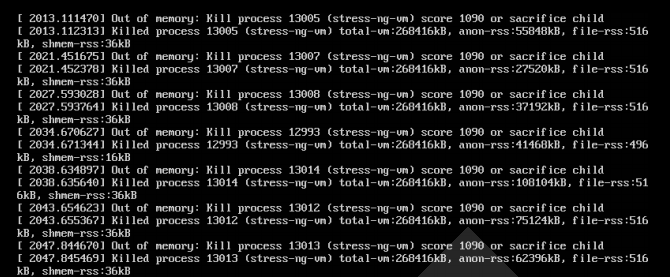
原因
给应用分配内存太少：比如虚拟机本身可使用的内存（一般通过启动时的VM参数指定）太少
应用用的太多，并且用完没释放，浪费了。此时就会造成内存泄露或者内存溢出
使用的解决办法：
限制java进程的max heap，并且降低java程序的worker数量，从而降低内存使用
给系统增加swap空间
1.4 进程状态
运行态：running
就绪态：ready
睡眠态：分为两种，可中断：interruptable，不可中断：uninterruptable
停止态：stopped，暂停于内存，但不会被调度，除非手动启动
僵死态：zombie，僵尸态，结束进程，父进程结束前，子进程不关闭，杀死父进程可以关闭僵死态的子进程
范例：僵尸态 1 2 3 4 5 6 7 8 9 10 11 12 13 14 15 16 17 18 19 20 21 22 23 24
范例：孤儿进程 1 2 3 [root@rocky01 ~]sleep (2342)
1.5 LRU算法 LRU：Least Recently Used 近期最少使用算法（喜新厌旧），释放内存
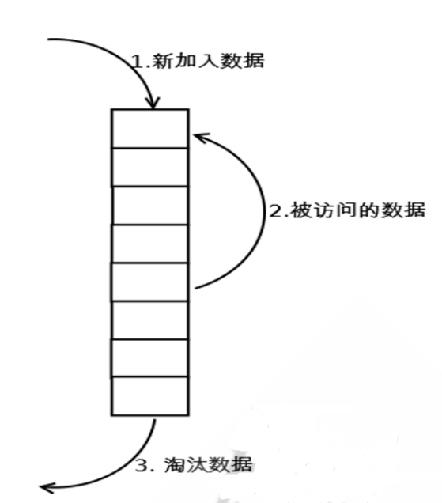
1.6 IPC进程间通信 范例：利用管道文件实现 IPC 1 2 3 4 5 6 7 8 9 [root@rocky01 ~]
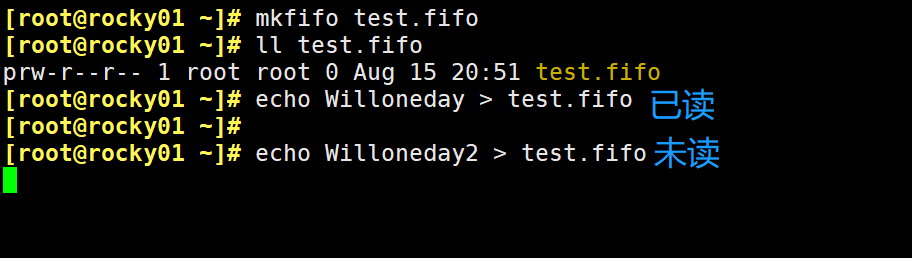
1.7 进程优先级
系统优先级：0-139, 数字越小，优先级越高,各有140个运行队列和过期队列
实时优先级: 99-0 值最大优先级最高
nice值：-20到19，对应系统优先级100-139或
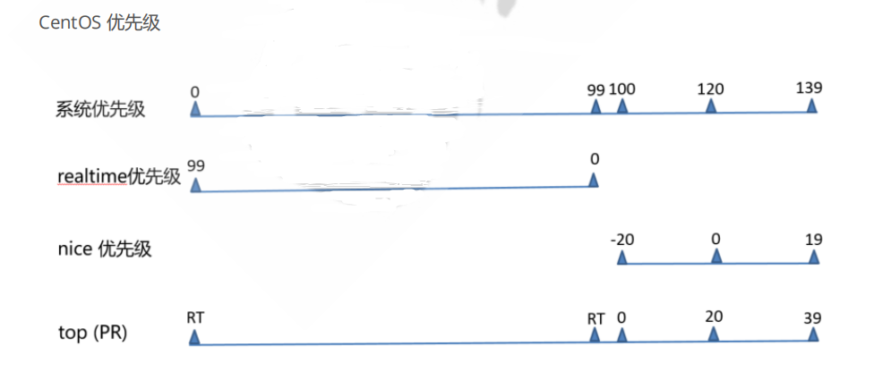
2 进程管理和性能相关工具
Linux系统状态的查看及管理工具：
pstree
ps
pidof
pgrep
top
htop
glance
pmap
vmstat
dstat
kill
pkill
job
bg
fg
nohup
2.1 pstree 进程树
pstree 可以用来显示进程的父子关系，以树形结构显示
格式：pstree [ OPTION ] [ PID | USER ]
常用选项：
-p 显示PID
-T 不显示线程thread,默认显示线程
-u 显示用户切换
-H pid 高亮显示指定进程及其前辈进程
2.2 ps 进程信息
ps 即 process state，显示有关活动进程信息，Linux系统各进程的相关信息均保存在/proc/PID目录下的各文件中
支持三种选项：
UNIX选项 如: -A -e
GNU选项 如: –help
BSD选项 如: a
格式：ps [ OPTION ]...
常用选项：
a 选项包括所有终端中的进程 x 选项包括不链接终端的进程 u 选项显示进程所有者的信息 f 选项显示进程树,相当于 –forest
k sort 属性 对属性排序,属性前加 - 表示倒序
o 属性… 选项显示定制的信息 pid、cmd、%cpu、%mem
L 显示支持的属性列表
-C cmdlist 指定命令，多个命令用，分隔
-L 显示线程
-e 显示所有进程，相当于-A -f 显示完整格式程序信息 -F 显示更完整格式的进程信息
-H 以进程层级格式显示进程相关信息
-u userlist 指定有效的用户ID或名称
-U userlist 指定真正的用户ID或名称
-g gid或groupname 指定有效的gid或组名称
-G gid或groupname 指定真正的gid或组名称
-p pid 显示指pid的进程
–ppid pid 显示属于pid的子进程
-t ttylist 指定tty,相当于 t
-M 显示SELinux信息，相当于Z
2.2.1 ps 输出信息
C : ps -ef 显示列 C 表示cpu利用率
VSZ: Virtual memory SiZe，虚拟内存集，线性内存
RSS: ReSident Size, 常驻内存集
STAT：进程状态
R：running
S: interruptable sleeping
D: uninterruptable sleeping
T: stopped
Z: zombie
+: 前台进程
l: 多线程进程
L：内存分页并带锁
N：低优先级进程
<: 高优先级进程
s: session leader，会话（子进程）发起者
I（大写i）：Idle kernel thread，CentOS 8 新特性
ni: nice值
pri: priority 优先级
rtprio: 实时优先级
psr: processor CPU编号
范例：查看进程的特定属性 1 2 3 4 5 6 7 8 9 [root@rocky01 ~]
范例：按CPU利用率倒序排序 1 2 3 4 5 6 7 [root@rocky01 ~]
面试题：找到未知进程的执行程序文件路径 1 2 [root@rocky01 ~]
2.3 prtstat 查看进程信息
可以显示进程信息,来自于psmisc包
格式：prtstat [ options ] PID ..
选项：-r raw格式显示
1 2 3 4 5 6 7 8 9 10 11 12 13 14 15 16 17 18 19 20 21 [root@rocky01 ~]comm : httpdnice : 0 num_threads: 1
2.4 设置和调整进程优先级
进程优先级调整
静态优先级：100-139
进程默认启动时的nice值为0，优先级为120
只有根用户才能降低nice值（提高优先性）
2.4.1 nice 以指定的优先级来启动进程 2.4.2 renice 可以调整正在执行中的进程的优先级 范例：使用方法 1 2 3 4 5 6 7 8 9 10 11 12 13 14 15
2.5 搜索进程
按条件搜索进程
ps 选项 | grep “ “
pgrep 按预定义的模式
/sbin/pidof 按确切的程序名称查看pid
2.5.1 pgrep 格式：pgrep [options] pattern
常用选项：
-u uid: effective user，生效者
-U uid: real user，真正发起运行命令者
-t terminal: 与指定终端相关的进程
-l: 显示进程名
-a: 显示完整格式的进程名
-P pid: 显示指定进程的子进程
范例：使用方法 2.5.2 pidof 格式：pidof [options] [program [...]]
选项：-x 按脚本名称查找pid
范例：使用方法 1 2 3 4 5 6 7 8 9 10 [root@rocky01 ~]
2.6 uptime 负载查询
/proc/uptime 包括两个值，单位 s
第一个值表示：系统启动时长
第二个值表示：空闲进程的总时长（按总的CPU核数计算）
uptime 和 w 显示以下内容
当前时间
系统已启动的时间
当前上线人数
系统平均负载（1、5、15分钟的平均负载，一般不会超过1，超过5时建议警报）
案例：系统平均负载 指在特定时间间隔内运行队列中的平均进程数,通常每个CPU内核的当前活动进程数不大于3，那么系统的性能良好。如果每个CPU内核的任务数大于5，那么此主机的性能有严重问题
如：linux主机是1个双核CPU，当Load Average 为6的时候说明机器已经被充分使用
1 2 3 4 5 6 7 8 9 10 11 12 13 [root@rocky01 ~]
2.7 mpstat 显示CPU相关统计 来自于sysstat包
1 2 3 4 5 6 7 8 9 nice %sys %iowait %irq %soft %steal %guest %gnice %idle
2.8 top、htop 查看进程实时状态 2.8.1 top 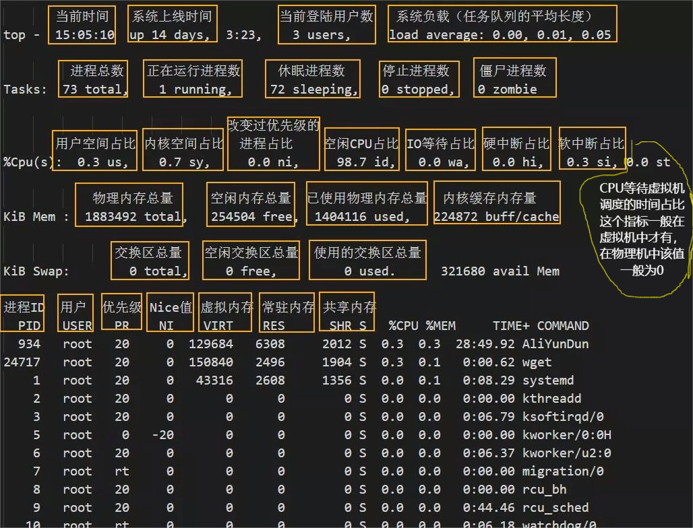
常见选项
-d #指定刷新时间间隔，默认为3秒
-b #全部显示所有进程
-n #刷新多少次后退出
-H #线程模式
排序：
P：以占据的CPU百分比,%CPU
M：占据内存百分比,%MEM
T：累积占据CPU时长,TIME+
首部信息显示：
uptime信息：l命令
tasks及cpu信息：t命令
cpu分别显示：1 (数字)
memory信息：m命令
退出命令：q
修改刷新时间间隔：s
终止指定进程：k
保存文件：W
2.8.2 htop 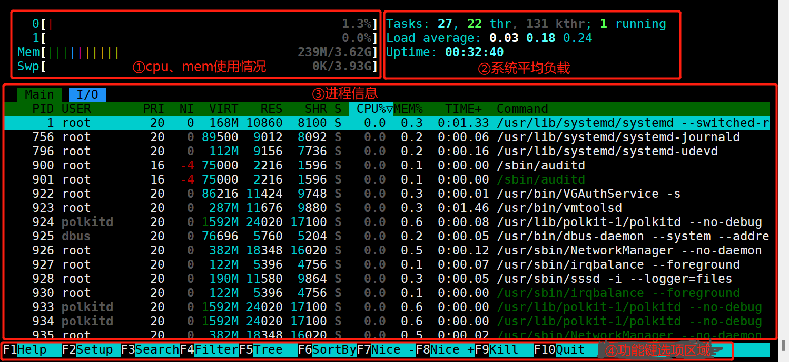
2.9 free 内存空间
向/proc/sys/vm/drop_caches中写入相应的修改值，会清理缓存。建议先执行sync（sync 命令将所有未写的系统缓冲区写到磁盘中，包含已修改的 i-node、已延迟的块 I/O 和读写映射文件）。执行echo1、2、3 至 /proc/sys/vm/drop_caches, 达到不同的清理目的
如果因为是应用有像内存泄露、溢出的问题时，从swap的使用情况是可以比较快速可以判断的，但通过执行free 反而比较难查看。但核心并不会因为内存泄露等问题并没有快速清空buffer或cache（默认值是0），生产也不应该随便去改变此值。
一般情况下，应用在系统上稳定运行了，free值也会保持在一个稳定值的。当发生内存不足、应用获取不到可用内存、OOM错误等问题时，还是更应该去分析应用方面的原因，否则，清空buffer，强制腾出free的大小，可能只是把问题给暂时屏蔽了。
排除内存不足的情况外，除非是在软件开发阶段，需要临时清掉buffer，以判断应用的内存使用情况；或应用已经不再提供支持，即使应用对内存的时候确实有问题，而且无法避免的情况下，才考虑定时清空buffer。
常用选项
-b 以字节为单位
-m 以MB为单位
-g 以GB为单位
-h 易读格式
-o 不显示-/+buffers/cache行
-t 显示RAM + swap的总和
-s n 刷新间隔为n秒
-c n 刷新n次后即退出
范例：清理缓存 1 2 3 4 5 6 7 8 9 10 11 [root@rocky01 ~]
2.10 pmap 进程对应的内存映射 格式：pmap [options] pid [...]
选项：-x: 显示详细格式的信息
1 2 3 4 5
2.11 vmstat 虚拟内存信息 格式：vmstat [options] [delay [count]]
1 2 3 4 5 6 7 8 9 10 11 12 13 14 15 16 17 18 19 20 21 22 23 24 25 26 27 28 [root@rocky01 ~]in cs us sy id wa stin : interrupts 中断速率，包括时钟id : Time spent idle. Linux 2.5.41前,包括IO-wait time.for IO. 2.5.41前，包括in idle.
2.12 iostat 统计CPU和设备IO信息 iostat 可以提供更丰富的IO性能状态数据
此工具由sysstat包提供
常用选项:
-c 只显示CPU行
-d 显示设备〈磁盘)使用状态
-k 以千字节为为单位显示输出
-t 在输出中包括时间戳
-x 在输出中包括扩展的磁盘指标
1 2 3 4 5 6 7 8 9 10 11 12 13 14 15 16 17 18 19 20 21 22 23 [root@rocky01 ~]nice %system %iowait %steal %idle"一次传输" 意思是"一次I/O请求" 。多个逻辑请求可能会被合并为"一次I/O请求" 。"一次传输" 请求的大小是未知的。
2.13 iotop 监视磁盘I/O iotop命令是一个用来监视磁盘I/O使用状况的top类工具iotop具有与top相似的UI，其中包括PID、用户、I/O、进程等相关信息，可查看每个进程是如何使用IO
第一行：Read和Write速率总计
第二行：实际的Read和Write速率
第三行：参数如下：
线程ID（按p切换为进程ID）
优先级
用户
磁盘读速率
磁盘写速率
swap交换百分比
IO等待所占的百分比
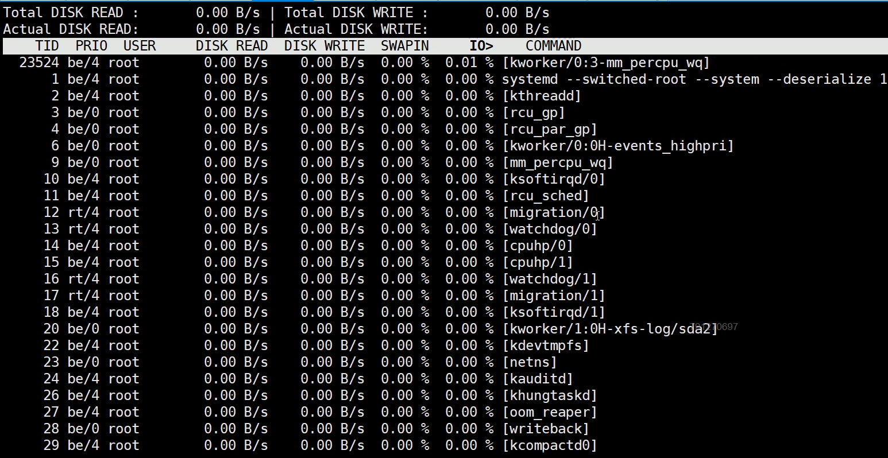
2.14 iftop 显示网络带宽使用情况 2.15 nload 查看网络实时吞吐量 nload 是一个实时监控网络流量和带宽使用情况，以数值和动态图展示进出的流量情况,通过EPEL源安装界面操作
上下方向键、左右方向键、enter键或者tab键都就可以切换查看多个网卡的流量情况
按 F2 显示选项窗口
按 q 或者 Ctrl+C 退出 nload
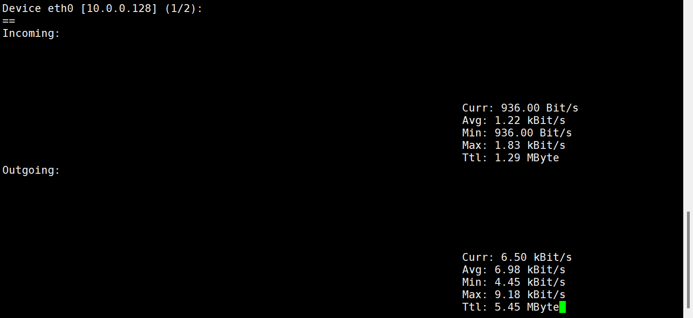
2.16 nethogs 查看进程网络带宽的使用情况 NetHogs是一个开源的命令行工具（类似于Linux的top命令），用来按进程或程序实时统计网络带宽使用率。
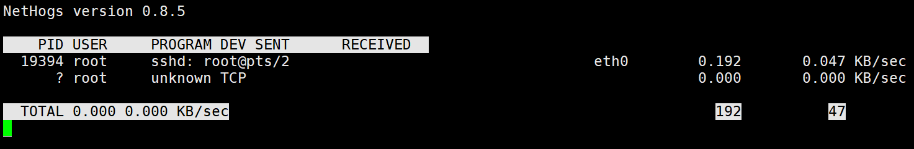
2.17 iptraf-ng 网络监视工具 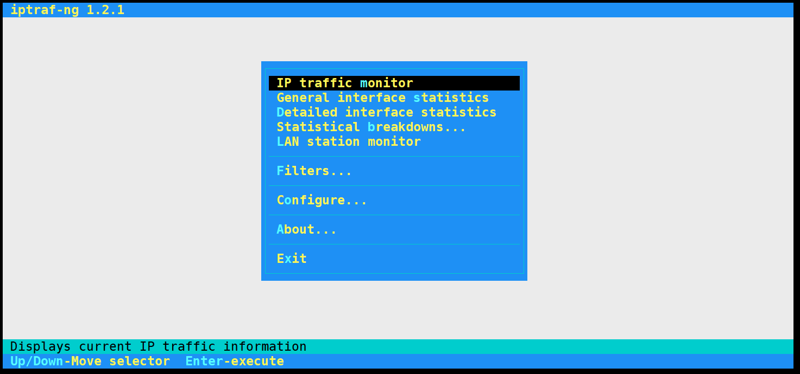
2.18 dstat 系统资源统计 dstat由pcp-system-tools包提供，但安装dstat包即可, 可用于代替 vmstat,iostat功能
格式：dstat [-afv] [options..] [delay [count]]
常用选项
-c 显示cpu相关信息
-C #,#,…,total
-d 显示disk相关信息
-D total,sda,sdb,…
-g 显示page相关统计数据
-m 显示memory相关统计数据
-n 显示network相关统计数据
-p 显示process相关统计数据
-r 显示io请求相关的统计数据
-s 显示swapped相关的统计数据
–tcp
–udp
–unix
–raw
–socket
–ipc
–top-cpu：显示最占用CPU的进程
–top-io: 显示最占用io的进程
–top-mem: 显示最占用内存的进程
–top-latency: 显示延迟最大的进程
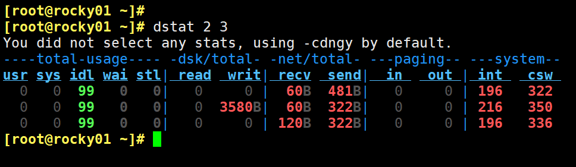
2.19 glances 综合监控工具 此工具可以通过EPEL源安装,CentOS 8 目前已提供,但测试有问题
常用选项：
-b: 以Byte为单位显示网卡数据速率
-d: 关闭磁盘I/O模块
-f /path/to/somefile: 设定输入文件位置
-o {HTML|CSV}：输出格式
-m: 禁用mount模块
-n: 禁用网络模块
-t #: 延迟时间间隔
-1：每个CPU的相关数据单独显示
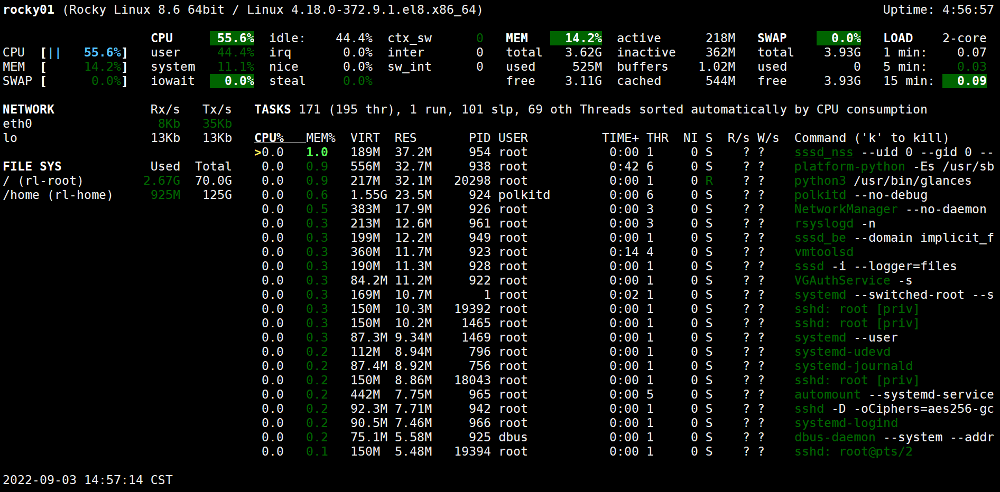
2.20 lsof 查看进程打开文件
选项
-a：列出打开文件存在的进程
-c<进程名>：列出指定进程所打开的文件
-g：列出GID号进程详情
-d<文件号>：列出占用该文件号的进程
+d<目录>：列出目录下被打开的文件
+D<目录>：递归列出目录下被打开的文件
-n<目录>：列出使用NFS的文件
-i<条件>：列出符合条件的进程(4、6、协议、:端口、 @ip ) -p<进程号>：列出指定进程号所打开的文件
-u：列出UID号进程详情
-h：显示帮助信息
-v：显示版本信息。
-n: 不反向解析网络名字
范例：使用方法 1 2 3 4 5 6 7 8 9 10 11 12 13 14 15 16 17 18
范例：恢复正在使用中的误删除的文件 1 2 3 4 5 6 7 8 9 10 11 12 13 14 15 16 17 18 19 20 21 22 23 24 25 26 27 一、此文件必须要被打开echo "lsof test!" tail 18189 root 3r REG 253,0 18 201392493 Willoneday.txtcat : Willoneday.txt: No such file or directorytail 18189 root 3r REG 253,0 18 201392493 /root/Willoneday.txt (deleted)'/root/Willoneday.txt (deleted)' echo "lsof test!"
2.21 信号发送 2.21.1 kill kill：内部命令，可用来向进程发送控制信号，以实现对进程管理,每个信号对应一个数字，信号名称以SIG开头（可省略），不区分大小写
1 2 3 4 5 6 7 8 9 10 11 12 13 14 15 16 17
常用信号
SIGHUP 无须关闭进程而让其重读配置文件
SIGINT 中止正在运行的进程；相当于Ctrl+c
SIGQUIT 相当于ctrl+\
SIGKILL 强制杀死正在运行的进程,可能会导致数据丢失,慎用!
SIGTERM 终止正在运行的进程，默认信号
SIGCONT 继续运行
SIGSTOP 后台休眠
2.21.2 killall killall命令用于杀死指定名字的进程
2.21.3 pkill pkill命令可按模式杀死进程
范例：利用 0 信号实现进程的健康性检查 1 2 3 4 5 6 7 8 9 10 11 12 13 then no actual signal is sent, but error checking is still performed.
2.22 cockpit CentOS8新特性 由cockpit包提供,当前Ubuntu和CentOS7也支持此工具
Cockpit 是CentOS 8 取入的新特性，是一个基于 Web 界面的应用，它提供了对系统的图形化管理
监控系统活动（CPU、内存、磁盘 IO 和网络流量）
查看系统日志条目
查看磁盘分区的容量
查看网络活动（发送和接收）
查看用户帐户
检查系统服务的状态
提取已安装应用的信息
查看和安装可用更新（如果以 root 身份登录）并在需要时重新启动系统
打开并使用终端窗口
2.23 作业管理
Linux的作业控制
前台作业：通过终端启动，且启动后一直占据终端
后台作业：可通过终端启动，但启动后即转入后台运行（释放终端）
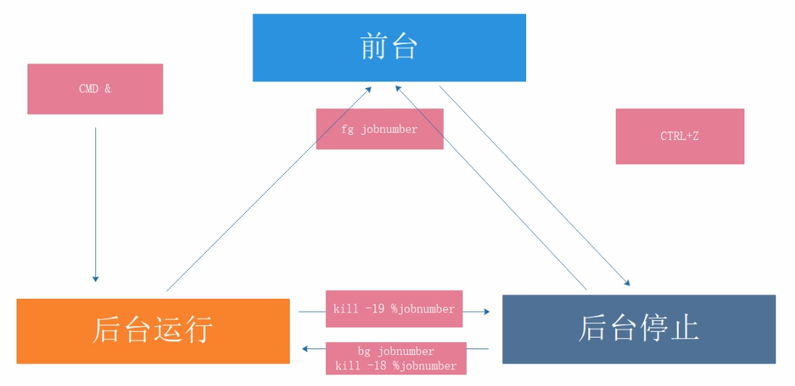
2.23.1让作业运行于后台 1 2 运行中的作业： Ctrl+z
后台作业虽然被送往后台运行，但其依然与终端相关；
退出终端，将关闭后台作业。如果希望送往后台后，剥离与终端的关系
1 2 3 [root@rocky01 ~]
2.23.2 查看当前终端所有作业 2.23.3 作业控制 1 2 3 fg [[%]JOB_NUM]：把指定的后台作业调回前台bg [[%]JOB_NUM]：让送往后台的作业在后台继续运行kill [%JOB_NUM]： 终止指定的作业
范例：nohup 1 2 3 4 5 6 7 8 [root@rocky01 ~]
2.24 并行运行 利用后台执行，实现并行功能，即同时运行多个进程，提高效率
后台执行的程序，要想退出，要个wait指令，否则，它什么时候退出，敲回车才能看出来
方法1 1 2 3 4 5 [root@rocky01 ~]wait
方法2 1 (/root/f1.sh&);(/root/f2.sh&);(/root/f3.sh&)
方法3 范例：多组命令实现并行 范例：扫描主机 1 2 3 4 5 6 7 8 9 10 11 12 13 14 15 16 17 18 19 20 21 22 23 24 25 26 27 28 29 30 31 32 33 34 35 36 37 38 39 40 41 42 43 44 [root@centos8 ~]for i in {1..254};do if ping -c1 -W1 $net .$i &> /dev/null;then echo $net .$i is upelse echo $net .$i is downfi done wait
3 任务计划 通过任务计划，可以让系统自动的按时间或周期性任务执行任务
注意: 此功能需要实现邮件通知，必须安装并启动邮件服务
范例: 环境准备
1 2 [root@rocky01 ~]
未来的某时间点执行一次任务
at 指定时间点，执行一次性任务
batch 系统自行选择空闲时间去执行此处指定的任务
周期性运行某任务
3.1 一次性任务 3.1.1 at 工具 由包 at 提供
依赖与atd服务,需要启动才能实现at任务
at队列存放在/var/spool/at目录中,ubuntu存放在/var/spool/cron/atjobs目录下
执行任务时PATH变量的值和当前定义任务的用户身份一致
格式：at [option] TIME
常用选项：
-V 显示版本信息
-t time 时间格式 [[CC]YY]MMDDhhmm[.ss]
-l 列出指定队列中等待运行的作业；相当于atq
-d N 删除指定的N号作业；相当于atrm
-c N 查看具体作业N号任务
-f file 指定的文件中读取任务
-m 当任务被完成之后，将给用户发送邮件，即使没有标准输出
注意：
作业执行命令的结果中的标准输出和错误以执行任务的用户身份发邮件通知给 root
默认CentOS 8 最小化安装没有安装邮件服务,需要自行安装
TIME：定义出什么时候进行 at 这项任务的时间
1 2 3 HH:MM [YYYY-mm-dd]
范例：at 时间格式 1 2 3 4 5 6 7 8 9 10 11 12
at 任务执行方式：
/etc/at.{allow,deny} 控制用户是否能执行at任务
白名单：/etc/at.allow 默认不存在，只有该文件中的用户才能执行at命令
黑名单：/etc/at.deny 默认存在，拒绝该文件中用户执行at命令，而没有在at.deny 文件中的使用者则可执行
如果两个文件都不存在，只有 root 可以执行 at 命令
3.2 cron 周期性任务计划 周期性任务计划cron相关的程序包：
cronie：主程序包，提供crond守护进程及相关辅助工具
crontabs：包含CentOS提供系统维护任务
cronie-anacron：cronie的补充程序，用于监控cronie任务执行状况，如:cronie中的任务在过去该运行的时间点未能正常运行，则anacron会随后启动一次此任务
cron 依赖于crond服务，确保crond守护处于运行状态
cron任务分为：
系统cron任务：系统维护作业，/etc/crontab 主配置文件， /etc/cron.d/ 子配置文件
用户cron任务：
红帽系统保存在 /var/spool/cron/USERNAME Ubuntu 系统存放在/var/spool/cron/crontabs/USERNAME，利用 crontab 命令管理
计划任务日志：/var/log/cron
3.2.1 系统cron计划任务 /etc/crontab 格式说明，详情参见 man 5 crontab
1 2 3 4 5 6 7 8 9 10 11 12 13 14 15 16 17 18 [root@rocky01 ~]
范例：使用方法 1 2 3 4 5 "Howdy!"
crond任务相关文件 1 2 3 4 5 6 /etc/crontab 配置文件
3.2.2 用户计划任务 crontab命令
每个用户都有专用的cron任务文件：/var/spool/cron/USERNAME
默认标准输出和错误会被发邮件给对应的用户,如：root创建的任务就发送至root的邮箱
root能够修改其它用户的作业
用户的cron 中默认 PATH=/usr/bin:/bin,如果使用其它路径,在任务文件的第一行加PATH=/path或者加入到计划任务执行的脚本中 第六个字段指定要运行的命令。 该行的整个命令部分，直至换行符或“％”字符，指定的shell执行.除非使用反斜杠（\）进行转义，否则该命令中的“％”字符将变为换行符，并且第一个％之后的所有数据将作为标准输入发送到该命令。
crontab命令格式：
crontab [-u user] [-l | -r | -e] [-i]
常用选项：
-l 列出所有任务
-e 编辑任务
-r 移除所有任务
-i 同-r一同使用，以交互式模式移除指定任务
-u user 指定用户管理cron任务,仅root可运行
控制用户执行计划任务：
范例：Ubuntu修改默认文本编辑器为vim 1 2 3 [root@ubuntu01 ~]export EDITOR=vim
范例：PATH变量 1 2 3 4 5 6 7 8 9 10 11 12 13 echo $PATH echo $PATH
面试题：11月每天的6-12点之间每隔2小时执行/app/bin/test.sh 1 2 [root@rocky01 ~]
注意：运行结果的标准输出和错误以邮件通知给相关用户 1 2 (1) COMMAND > /dev/null
cron任务中不建议使用%，它有特殊用途，它表示换行的特殊意义，且第一个%后的所有字符串会被将成当作命令的标准输入,如果在命令中要使用%，则需要用 \ 转义
注意：将%放置于单引号中是不支持的
范例： 在crontab中%的用法 1 2 30 2 * * * /bin/cp -a /etc/ /data/etc`date +\%F_\%T`date +‘%F_%T’`
范例：秒级别运行任务 1 for min in 0 1 2; do echo "hi" ; sleep 20; done
二、系统启动和内核管理 1 CentOS 6 的启动管理 1.1 CentOS 6 启动流程 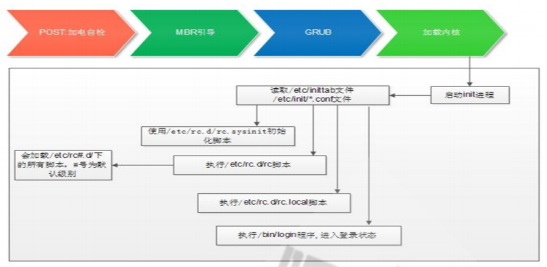
加载BIOS的硬件信息，获取第一个启动设备
读取第一个启动设备MBR的引导加载程序(grub)的启动信息
加载核心操作系统的核心信息，核心开始解压缩，并尝试驱动所有的硬件设备
核心执行init程序，并获取默认的运行信息
init程序执行/etc/rc.d/rc.sysinit文件，重新挂载根文件系统
启动核心的外挂模块
init执行运行的各个批处理文件(scripts)
init执行/etc/rc.d/rc.local
执行/bin/login程序，等待用户登录
登录之后开始以Shell控制主机
（1）硬件启动 POST
POST：Power-On-Self-Test，加电自检，是BIOS功能的一个主要部分。负责完成对CPU、主板、内存、硬盘子系统、显示子系统、串并行接口、键盘等硬件情况的检测
主板的ROM：BIOS，Basic Input and Output System，保存着有关计算机系统最重要的基本输入输出程序，系统信息设置、开机加电自检程序和系统启动自举程序等
主板的RAM：CMOS互补金属氧化物半导体，保存各项参数的设定，按次序查找引导设备，第一个有引导程序的设备为本次启动设备
（2）启动加载器 bootloader （2.1）grub 功能和组成
bootloader: 引导加载器，引导程序
Windows: ntloader，仅是启动OS
Linux：功能丰富，提供菜单，允许用户选择要启动系统或不同的内核版本；把用户选定的内核装载到内存中的特定空间中，解压、展开，并把系统控制权移交给内核
Linux的bootloader
LILO：LInux LOader，早期的bootloader，功能单一
GRUB: GRand Unified Bootloader, CentOS 5,6 GRUB 0.97: GRUB Legacy， CentOS 7 以后使用GRUB 2.02
GRUB 启动阶段
primary boot loader :
1st stage：MBR的前446个字节 1.5 stage：MBR 之后的扇区，让stage1中的bootloader能识别stage2所在的分区上的文件系统
secondary boot loader ：
2nd stage，分区文件/boot/grub/
（2.2）CentOS6 grub安装 安装 grub的两种方法：
（1）grub-install 安装grub stage1和stage1_5到/dev/DISK磁盘上，并复制GRUB相关文件到 DIR/boot目录下
（2）grub命令
1 2 3
实战范例：grub的第1阶段故障无法启动,进行修复 1 2 3 4 5 6 7 8 9 10
范例：centos6下的/boot/grub/grub.conf配置文件 1 2 3 4 5 6 7 8 9 10 11 12 13 14 15 [root@centos6 ~]timeout =5
范例： 破解root口令 1 2 3 (1) 编辑grub菜单(选定要编辑的title，而后使用a 或 e 命令)
（3）加载 kernel 范例：误删除/boot/initramfs-2.6.32-754.el6.x86_64.img无法启动，故障恢复 1 2 3 4 5 6 7 8 9 [root@centos6 ~]
（4）init初始化 （4.1）运行级别 运行级别：为系统运行或维护等目的而设定；0-6：7个级别，一般使用3, 5做为默认级别
1 2 3 4 5 6 7 0：关机
1 2 3 4 5 6 who -r
（4.2）初始化脚本 sysinit 1 2 3 4 5 6 7 8 9 10 11 12 13 /etc/rc.d/rc.sysinit
（5）Centos6服务管理 1 2
范例：自定义服务脚本 1 2 3 4 5 6 7 8 9 10 11 12 13 14 15 16 17 18 19 20 21 22 23 24 25 26 27 28 29 30 31 32 33 34 35 36 37 38 39 40 41 42 43 [root@centos6 ~]start exit || touch /var/lock/subsys/testsrv"Starting testsrv" sleep 2 }stop rm /var/lock/subsys/testsrv || exit "Stopping testsrv" status echo "testsrv is running..." || echo "testsrv is stopped" case $1 in echo $"Usage: $0 {start|stop|status|restart}" exit 2esac
（6）非独立服务
服务分为独立服务和非独立服务
瞬态（Transient）服务被超级守护进程 xinetd 进程所管理，也称为非独立服务
进入的请求首先被xinetd代理
配置文件：
1 2 /etc/xinetd.conf
范例：Centos6 开启 telnet服务 1 2 3 4 5 6 [root@centos6 ~]
（7）开机启动文件 rc.local 1 2 /etc/rc.local
注意：正常级别下，最后启动一个服务S99local没有链接至/etc/rc.d/init.d一个服务脚本，而是指向了/etc/rc.d/rc.local脚本
不便或不需写为服务脚本放置于/etc/rc.d/init.d/目录，且又想开机时自动运行的命令，可直接放置于/etc/rc.d/rc.local文件中
/etc/rc.d/rc.local在指定运行级别脚本后运行
注意 : 默认****Ubuntu 无 /etc/rc.local 文件 ,可以创建此脚本文件并添加执行权限 shebang****机制
（8）Centos6 启动过程总结 1 2 3 4 5 6 7 POST--
2 systemd和启动流程 2.1 systemd 特性 Systemd：从 CentOS 7 版本之后开始用 systemd 实现init进程，系统启动和服务器守护进程管理器，负责在系统启动或运行时，激活系统资源，服务器进程和其它进程
systemd 核心概念：unit
unit表示不同类型的systemd对象，通过配置文件进行标识和配置；文件中主要包含了系统服务、监听socket、保存的系统快照以及其它与init相关的信息
Unit类型：
1 2 3 4 5 6 7 8 9 10 11 12 13 14
service unit: 文件扩展名为.service, 用于定义系统服务
Socket unit: .socket, 定义进程间通信用的socket文件，也可在系统启动时，延迟启动服务，实现按需启动
Target unit: 文件扩展名为.target，用于模拟实现运行级别
Device unit: .device, 用于定义内核识别的设备
Mount unit: .mount, 定义文件系统挂载点
Snapshot unit: .snapshot, 管理系统快照
Swap unit: .swap, 用于标识swap设备
Automount unit: .automount，文件系统的自动挂载点
Path unit: .path，用于定义文件系统中的一个文件或目录使用,常用于当文件系统变化时，延迟激活服务，如：spool 目录
unit的配置文件
/usr/lib/systemd/system #每个服务最主要的启动脚本设置，类似于之前的/etc/init.d/
/lib/systemd/system #ubutun的对应目录,兼容于CentOS7,8和Ubuntu
/run/systemd/system #系统执行过程中所产生的服务脚本，比上面目录优先运行
/etc/systemd/system #管理员建立的执行脚本，类似于/etc/rcN.d/Sxx的功能，比上面目录优先运行
2.2 systemctl管理系统服务service unit 命令：systemctl COMMAND name.service
1 2 3 4 5 6 7 8 9 10 11 12 13 14 15 16 17 18 19 20 21 22 23 24 25 26 27 28 29 30 31 32 33 34 35 36 37 38 39 40 41 42 43 44 45 46 47 48 49 50 51 52 53 54 55 56 57 58 59 60 61 62 cat sshdtype service 或type service --all 或type service -aenable name.service disable name.servicetype servicels /etc/systemd/system/*.wants/name.servicetype =serviceenable --now postfix disable --now postfixkill unitname
2.3 service unit文件格式 /etc/systemd/system：系统管理员和用户使用
/usr/lib/systemd/system：发行版打包者使用
unit 格式说明：
以 “#” 开头的行后面的内容会被认为是注释
相关布尔值，1、yes、on、true 都是开启，0、no、off、false 都是关闭
时间单位默认是秒，所以要用毫秒（ms）分钟（m）等须显式说明
service unit file文件通常由三部分组成：
Type：定义影响ExecStart及相关参数的功能的unit进程启动类型
simple：默认值，这个daemon主要由ExecStart接的指令串来启动，启动后常驻于内存中
forking：由ExecStart启动的程序透过spawns延伸出其他子程序来作为此daemon的主要服务。原生父程序在启动结束后就会终止
oneshot：与simple类似，不过这个程序在工作完毕后就结束了，不会常驻在内存中
dbus：与simple类似，但这个daemon必须要在取得一个D-Bus的名称后，才会继续运作.因此通常也要同时设定BusNname= 才行
notify：在启动完成后会发送一个通知消息。还需要配合 NotifyAccess 来让 Systemd 接收消息
idle：与simple类似，要执行这个daemon必须要所有的工作都顺利执行完毕后才会执行。这类的daemon通常是开机到最后才执行即可的服务
[Unit]：定义与Unit类型无关的通用选项；用于提供unit的描述信息、unit行为及依赖关系等
[Service]：与特定类型相关的专用选项；此处为Service类型
[Install]：定义由“systemctl enable”以及”systemctl disable“命令在实现服务启用或禁用时用到的一些选项
Unit段的常用选项：
Description：描述信息
After：定义unit的启动次序，表示当前unit应该晚于哪些unit启动，其功能与Before相反
Requires：依赖到的其它units，强依赖，被依赖的units无法激活时，当前unit也无法激活
Wants：依赖到的其它units，弱依赖
Conflicts：定义units间的冲突关系
Service段的常用选项：
EnvironmentFile：环境配置文件
ExecStart：指明启动unit要运行命令或脚本的绝对路径
ExecStartPre： ExecStart前运行
ExecStartPost： ExecStart后运行
ExecStop：指明停止unit要运行的命令或脚本
Restart：当设定Restart=1 时，则当次daemon服务意外终止后，会再次自动启动此服务
Install段的常用选项：
Alias：别名，可使用systemctl command Alias.service
RequiredBy：被哪些units所依赖，强依赖
WantedBy：被哪些units所依赖，弱依赖
Also：安装本服务的时候还要安装别的相关服务
注意：对于新创建的unit文件，或者修改了的unit文件，要通知systemd重载此配置文件,而后可以选择重启
1 2 3 4 5 6 7 8 9 10 11 12 13 14 15 16 17 18 19 20 [root@rocky01 ~]$OPTIONS $CRYPTO_POLICY $MAINPID
范例：自定义service的unit文件 1 2 3 4 5 6 7 8 9 10 11 12 13 14 15 16 17 18 19 20 21 22 23 24 25 26 27 [root@rocky01 ~]"while true; do echo Hello World; sleep 1; done" limit : 23457)while true ; do echo Hello World; sleep 1; done sleep 1
范例：服务unit文件解读 1 2 3 4 5 6 7 8 9 10 11 12 13 14 15 16 17 [Unit]${MAINPID}
范例：Ubuntu实现开机自动运行程序 1 2 3 4 5 6 [root@ubuntu1804 ~]echo -e '\E[31;1mstarting test service\E[0m' sleep 10
2.4 运行级别
target units：相当于CentOS 6之前的runlevel ,unit配置文件：.target
1 2 ls /usr/lib/systemd/system/*.targettype target --all
和运行级别对应关系
0 ==> runlevel0.target, poweroff.target
1 ==> runlevel1.target, rescue.target
2 ==> runlevel2.target, multi-user.target
3 ==> runlevel3.target, multi-user.target
4 ==> runlevel4.target, multi-user.target
5 ==> runlevel5.target, graphical.target
6 ==> runlevel6.target, reboot.target
获取默认运行级别 相当于查看 /etc/inittab
修改默认级别 相当于修改 /etc/inittab
范例：禁用ctrl+alt+delete 重启快捷键 1 2 3 4 5 6 7 8 9 [root@rocky01 ~]
2.5 设置内核参数 设置内核参数，只影响当次启动
启动时，到启动菜单，按e键，找到在linux 开头的行后添加systemd.unit=desired.target
比如：
1 2
2.6 CentOS 7之后版本引导顺序 1 2 3 4 5 6 7 8 9 10 11 12 13 14 15 16 17 1. UEFi或BIOS初始化，运行POST开机自检
范例：启动详细过程网页版 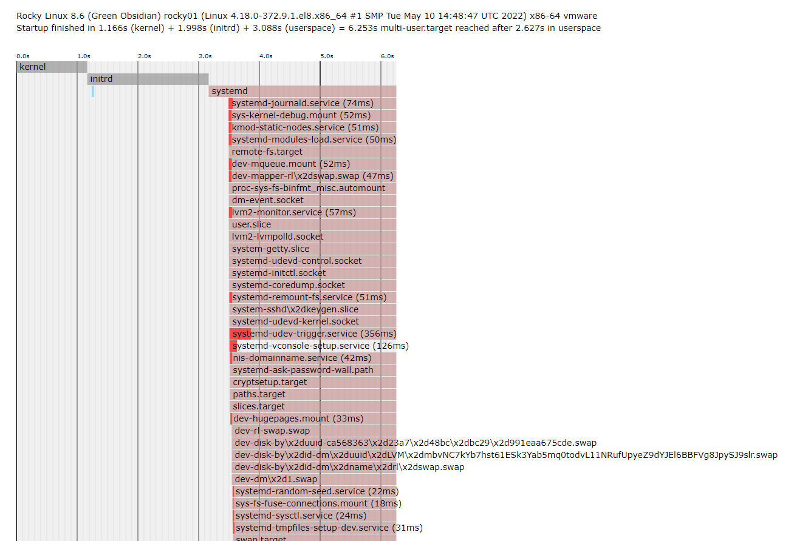
2.7 破解 CentOS 7和8的 root 密码 方法一 1 2 3 4 5 6 7 8 9 10 11 启动时任意键暂停启动chroot /sysroottouch /.autorelabelexit
方法二 1 2 3 4 5 6 7 8 9 10 11 chroot /sysroottouch /.autorelabelexit
2.8 实现 GRUB2 安全 1 2 3 4 5 6 7 8 9 10 11 12 13 14
2.9 故障排错实战案例 实战案例1：CentOS 7,8 破坏MBR后进行恢复 1 2 3 dd if =/dev/zero of=/dev/sda bs=1 count=446
实战案例2：CentOS 7,8 删除 /boot/grub2/ 所有内容进行恢复
1 2 3 4 chroot /mnt/sysimage
实战案例3：CentOS 7,8 删除 /boot/ 下所有文件后进行恢复 1 2 3 4 5 6 7 8 9 10 11 12 13 14 15 16 17 18 19 20 21 22 23 24 25 26 27 28 29 30 chroot /mnt/sysrootchroot /mnt/sysimagesync sync exit exit
3 /proc 目录和内核参数管理
/proc目录：内核把自己内部状态信息及统计信息，以及可配置参数通过proc伪文件系统加以输出
sysctl是一个允许改变正在运行中的Linux系统的接口，修改的是针对整个系统的内核参数。sysctl的修改是立即且临时的（重启后失效）。也可以通过修改sysctl.conf配置文件，达到永久生效。
常用内核参数：
net.ipv4.ip_forward
net.ipv4.icmp_echo_ignore_all #禁止ping通本主机
net.ipv4.ip_nonlocal_bind #允许应用程序可以监听本地不存在的IP
fs.file-max = 1020000 #全局打开文件的最大数
vm.overcommit_memory = 0
#0表示内核将检查是否有足够可用内存供应用进程使用；如果有足够的可用内存，内存申请允许；否则内存申请失败，并把错误返回给应用进程。
#1表示内核允许分配所有的物理内存，而不管当前的内存状态如何。
#2表示内核允许分配超过所有物理内存和交换空间总和的内存。
vm.swappiness = 10 #设置内存还剩余10%空闲空间时,就会使用swap空间,默认值为30，值越大表示越倾向于使用swap
#禁用IPv6
net.ipv6.conf.all.disable_ipv6 = 1
net.ipv6.conf.default.disable_ipv6 = 1
3.1 sysctl 将值写入变量 1 sysctl -w path.to.parameter=VALUE
3.2 默认配置文件 范例：临时设置某参数 1 sysctl -w parameter=VALUE
范例：读取配置文件设置参数 1 sysctl -p [/path/to/conf_file]